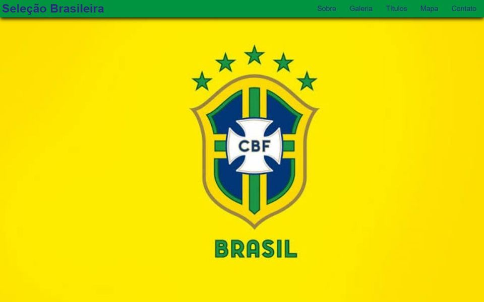
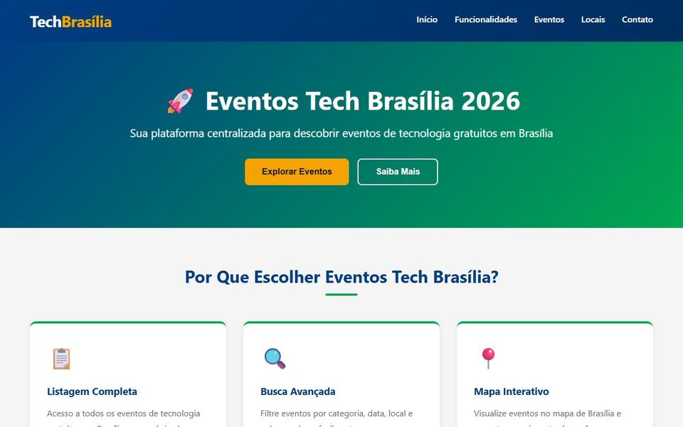
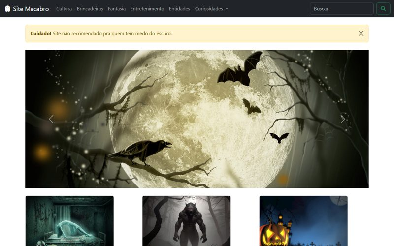
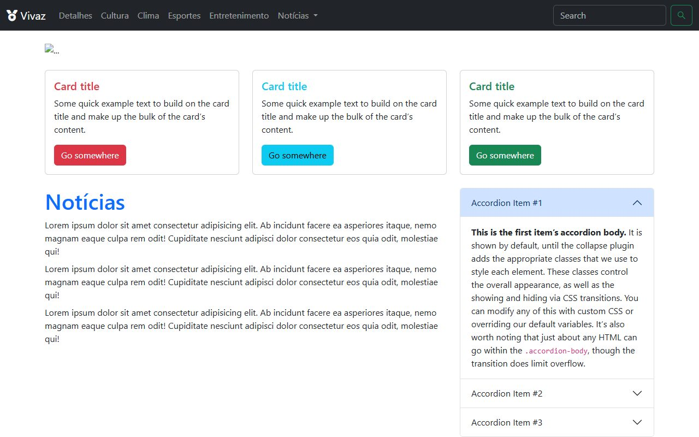

Desenvolvimento Front-end para Web · Avaliativo · Meu primeiro site
Seleção Brasileira
Meu primeiro site avaliativo: uma homenagem à Seleção, com galeria de fotos, títulos, mapa e formulário de contato, em HTML e CSS.
$ whoami
Estudante de Análise e Desenvolvimento de Sistemas na UDF. Aqui você encontra os projetos que venho construindo ao longo do curso.
Ver projetosUm pouco de quem eu sou e do que estou aprendendo
Sou o Guilherme de Pontes Nunes, aluno do 2º semestre de Análise e Desenvolvimento de Sistemas no UDF Centro Universitário, em Brasília.
No curso aprendi HTML, CSS e JavaScript: como montar a estrutura de uma página, com cabeçalhos e parágrafos, como organizar o layout com grid e como cada função funciona. Também passei por Python, linguagem C, banco de dados, design de interfaces e inteligência artificial.
Daqui pra frente, quero estudar mais para desenvolver sites e landing pages.
Fale comigoTrabalhos que fiz nas disciplinas do curso

Desenvolvimento Front-end para Web · Avaliativo · Meu primeiro site
Meu primeiro site avaliativo: uma homenagem à Seleção, com galeria de fotos, títulos, mapa e formulário de contato, em HTML e CSS.

Engenharia de Prompt e Aplicações em IA · Avaliativo
Site que reúne eventos de tecnologia gratuitos em Brasília, com lista de eventos, filtros por categoria e os locais onde acontecem.


Desenvolvimento Front-end para Web
Portal de notícias montado com componentes do Bootstrap: barra de navegação, cartões, carrossel e acordeão.
Desenvolvimento Front-end para Web
Site de barbearia em HTML e CSS puro, com menu fixo, galeria de fotos, mapa e formulário de contato.
Modelagem de Banco de Dados
Diagramas entidade-relacionamento, normalização e o script SQL que cria o banco a partir do modelo lógico.
Programação em Python
Lógica de programação na prática: tipos de dados, condicionais, laços e funções.
Minha caminhada no curso até aqui
UDF Centro Universitário · Brasília
Início do curso.
Aprofundar os estudos em front-end para criar sites e landing pages completos.
Quer trocar uma ideia sobre algum projeto? É só chamar